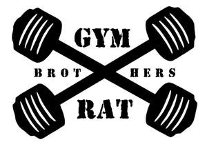

Trade Mark Journal No.2025/011 14 March 2025
UK00004166680 27 February 2025 (25,28)

- Class 25
- Clothes for sport; Clothes for sports; Sport shoes; Clothing for sports; Sports clothing; Sport shirts; Sports clothing [other than golf gloves]; Gym shorts; Gym boots; Gym suits; Clothing for gymnastics; Footwear for sport; Footwear for use in sport; Jackets being sports clothing; Sports garments; Sports pants; Clothing for wear in wrestling games; Athletic clothing; Sports shoes; Triathlon clothing; Sports wear; Boots for sport; Sports shirts; Clothing for cycling; Clothing for leisure wear; Clothes; Clothing for wear in judo practices; Boxing shoes; Sport stockings; Footwear for sports; Sports footwear; Beach clothes; Clothing for skiing; Jogging sets [clothing]; Golf clothing, other than gloves; Tennis wear; Leisure clothing; Sport coats; Sports socks; Sports jerseys and breeches for sports; Gymnastic shoes; Sports singlets; Jogging bottoms [clothing]; Sports jackets; Sports bras; Athletics shoes; Moisture-wicking sports pants; Jogging outfits; Athletic shoes; Tennis shirts; Boots for sports; Volleyball shoes; Soccer shoes; Sports jerseys; Moisture-wicking sports shirts; Tennis shoes; Leisure shoes; Sports over uniforms; Cycling shoes; Rugby shoes; Yoga shoes; Jogging shoes; Football shoes; Sports vests; Athletics footwear; Skiing shoes; Athletic uniforms; Basketball sneakers; Sports bibs; Jerseys [clothing]; Handball shoes; Shoes for leisurewear; Judo uniforms; Soccer shirts; Shorts [clothing]; Clothing; Tennis shorts; Work clothes; Clothing for cyclists; Tennis sweatbands; Shorts; Trousers shorts; Bib shorts; Boxer shorts; Swim shorts; Fleece shorts; Cycling shorts; Sweat shorts; Boxing shorts; Rugby shorts; Walking shorts; Maternity shorts; Golf shorts; Sliding shorts; Board shorts; Leggings [trousers]; Pants; Denim pants; Short trousers; Padded shorts for athletic use; Trousers; American football shorts; Sports shirts with short sleeves; Cycling pants; Tank-tops; Long-sleeved shirts; Warm-up pants; Short-sleeved shirts; Briefs [underwear]; Turtleneck shirts; Waterproof pants; Short-sleeve shirts; Jogging pants; Stretch pants; Sweatpants; Shirts; Short-sleeved T-shirts; Skorts; Cargo pants; Bib tights; Sweat pants; Weatherproof pants; Pajama bottoms; Tights; Sweatshorts; Denim jeans; Yoga pants; Baselayer bottoms; Waterproof trousers; Camouflage pants; Boardshorts; Thong sandals; Tracksuit bottoms; Trousers for sweating; Trunks [underwear]; Men's and women's jackets, coats, trousers, vests; Underwear; Riding trousers; Sleeved jackets; Trouser socks; Slacks; Men's underwear; Sleeveless jackets; Yoga shirts; Sundresses; Golf trousers; Swim briefs; Maternity pants; Bottoms [clothing]; Open-necked shirts; Polo shirts; Sweat shirts; Jockstraps [underwear]; Sweat-absorbent underwear; Undershirts; Casual trousers; Sleeveless pullovers; T-shirts; Shirts for suits; Tee-shirts; Shirts and slips; Snow pants; Boxer briefs; Culotte skirts; Tap pants; Vest tops; Ski pants; Underpants; Casual shirts; Tracksuit tops; Collared shirts; Underwear (Anti-sweat -); Anti-sweat underwear; Rain trousers; Trousers of leather; Wind pants; Camouflage shirts; Track pants; Rugby shirts; Sleeveless jerseys; Playsuits [clothing]; Swimsuits; Knit shirts; Padded pants for athletic use; Pantaloons; Shirt yokes; Pique shirts; Sleep shirts; Football shirts; Hooded sweat shirts; Golf shirts; Night shirts; Ramie shirts; Woven shirts; Shirt fronts; Fishing shirts; Under shirts; V-neck sweaters; American football shirts; Polo sweaters; Turtleneck sweaters; Printed t-shirts; Padded shirts for athletic use; Mock turtleneck sweaters; Sleep pants; Polo knit tops; Denims [clothing]; Undershirts for kimonos (juban); Wristbands [clothing]; Pyjamas [from tricot only]; Pants (Am.); Romper suits; Jackets (Stuff -) [clothing]; Stuff jackets [clothing]; Short overcoat for kimono (haori); Skirt suits; Shoes for casual wear; Embroidered clothing; Hoodies; Hooded sweatshirts; Sweatshirts; Hooded pullovers; Turtleneck pullovers; Beanie hats; Fleece pullovers; Fleece jackets; Fleece vests; Knit jackets; Beanies; Polar fleece jackets; Quilted jackets [clothing]; Hooded bathrobes; Turtleneck tops; Fingerless gloves as clothing; Hooded tops; Fleece tops; Jackets [clothing]; Sweaters; Camouflage vests; Handwarmers [clothing]; Gloves for apparel; Windproof clothing; Knitted clothing; Knitted underwear; Camouflage gloves; Snowboard jackets; Long sleeve pullovers; Plush clothing; Crew neck sweaters; Men's clothing; Windproof jackets; Overshirts; Maternity leggings; Padded jackets; Pullovers; Gloves [clothing]; Gloves as clothing; Leggings [leg warmers]; Footless tights; Woollen tights; Bodysuits; Legwarmers; Footless socks; Yoga bottoms; Yoga socks; Headbands for clothing; Baselayer tops; Gymwear; Sweat-absorbent socks; Tops [clothing]; Yoga tops; Socks and stockings; Denim coats; Tunics; Men's sandals; Jumper dresses; Skirts; Gussets for leotards [parts of clothing]; Jogging bottoms; Jogging tops; Ski trousers; Trouser straps; Nurse pants; Trousers for children; Jogging suits; Sweat bottoms; Casual jackets; Cycling tops; Jumpers [pullovers]; Tennis pullovers; Vests; Quilted vests; Wind-resistant vests; Waistcoats [vests]; Fishing vests; Vests (Fishing -); Wind vests; Down vests; Running vests; Long sleeved vests; Athletics vests; Bomber jackets; Camouflage jackets; Rainproof jackets; Reversible jackets; Shell jackets; Wind-resistant jackets; Jackets; Waterproof jackets; Weatherproof jackets; Riding jackets; Collar liners for protecting clothing collars; Shoulder straps for clothing; Ski jackets; Knitted gloves; Jumper suits; Gilets; Collar guards for protecting clothing collars; Waterproof capes; Gaiter straps; Top hats; Knit tops; Top coats; Knitted tops; Halter tops; Shoulder wraps [clothing]; Shoulder wraps for clothing; Tank tops; Socks; Slipper socks; Toe socks; Ankle socks; Woollen socks; Non-slip socks; Bed socks; Thermal socks; Men's socks; Tennis socks; Socks for men; Water socks; Pop socks; Inner socks for footwear; Sock suspenders; American football socks; Japanese style socks (tabi); Insoles [for shoes and boots]; Knitted baby shoes; Knee-high stockings; Slippers; Shoes; Valenki [felted boots]; Socks for infants and toddlers; Slip-on shoes; Heel pieces for stockings; Pedicure slippers; Waterproof shoes; Hiking shoes; Sneakers [footwear]; Insoles for footwear; Rubber shoes; Shoe soles; Slipper soles; Shoes for foot volleyball; Foot volleyball shoes; Footwear soles; Soles for footwear; Sweat-absorbent underclothing [underwear]; Jumpers [sweaters]; Sneakers; Mountaineering shoes; Boots; Hidden heel shoes; Knee warmers [clothing]; Tops; Tube tops; Crop tops; Rugby tops; Maternity tops; Warm-up tops; Toe boxes.
- Class 28
- Gym balls for yoga; Gym balls; Gym chalk for improving hand grip in sports activities; Tennis uprights [sports equipment]; Gloves for sports; Sports equipment; Jungle gyms [play equipment]; Sport balls; Leg weights for sports training; Sport hoops; Sports equipment for pets; Athletic protective sportswear.
Emil Ivov Aleksov